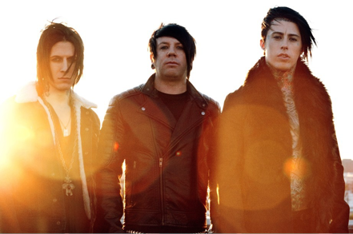
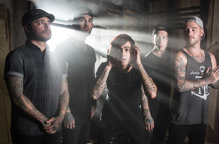
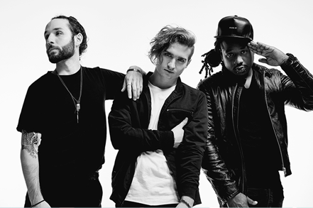
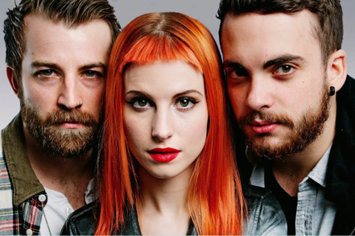

Prepare yourself for the 23rd annual coast to coast rock tour across America, sponsored by Vans and Journeys.
Known for catapulting up and coming bands into the spotlight, Warped Tour is a huge opportunity for unknown artists to play to diehard rock and punk rock fans. This year’s festival has over 80 artists performing on seven different stages, giving concertgoers ample opportunity to hear all of their favorite bands in one day.
Vans Warped Tour supports a vast array of charities, raising at least a quarter of million dollars each year. If you would like to get involved, check out the full list of the 2017 participating non-profit organizations at vanswarpedtour.com.
Headliners
-

Falling in Reverse
-

Sleeping with Sirens
-

Ghost Town
-

Paramore
Do Some Good
Feed Our Children NOW! will be accepting donations of (3) canned goods (cannot be dented or expired cans), a $5 donation, or a used cell phone. Bring your donation to the Feed Our Children NOW! tent to receive your Express Entry wristband; the tent is located at the main entrance gates near the Express Entry flag. All donations go to feed hungry children in each city and fund their youth empowerment programs!
Since 2005, the Vans Warped Tour has worked with local volunteers & venues to minimize the impact that the tour has on the environment. The Warped Eco Initiative aims to eventually ensure that Warped is a zero impact event and the Warped Eco Warriors are the crew that makes the Vans Warped Tour a greener experience for fans, bands, sponsors, and the planet! Some stats from the 2016 Tour:
-
27,704 lbs of co-mingled recycling collected
-
100 lbs of batteries were collected from stages
-
165 local volunteers helped make it the best Tour yet!
The nonprofit organization Music Saves Lives offers a backstage wristband for the first 100 fans daily that redeem their Music Saves Lives Blood Donation Voucher at the Music Saves Lives tent. In order to get your MSL Blood Donation Voucher you will need to donate blood or have someone donate blood on your behalf at a Music Saves Lives sponsored blood drive.
The non-profit truth® is an unstoppable force of smokers and non-smokers banding together to end smoking for good. Join the movement at thetruth.com, and stop by the tent at the show to get involved and win great prizes.
Vans Warped Tour. Where bands and fans come together for the love of music and to have the Best Day Ever.